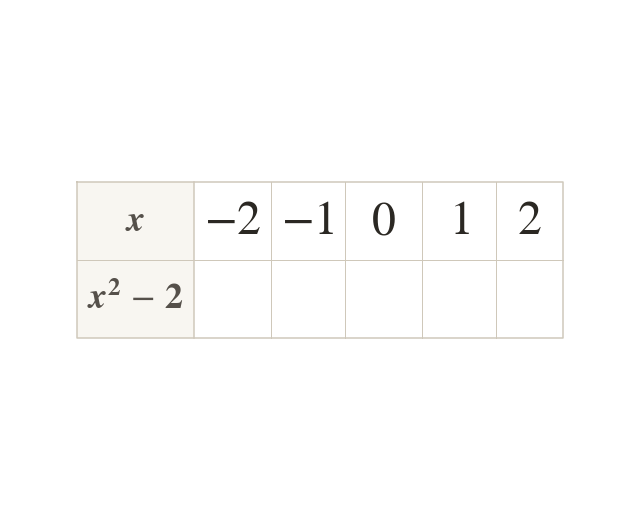
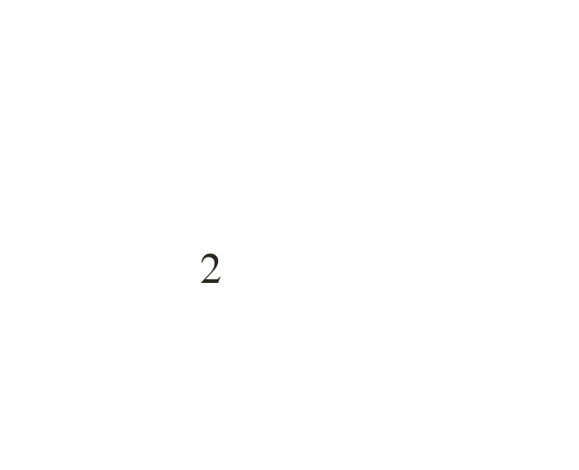
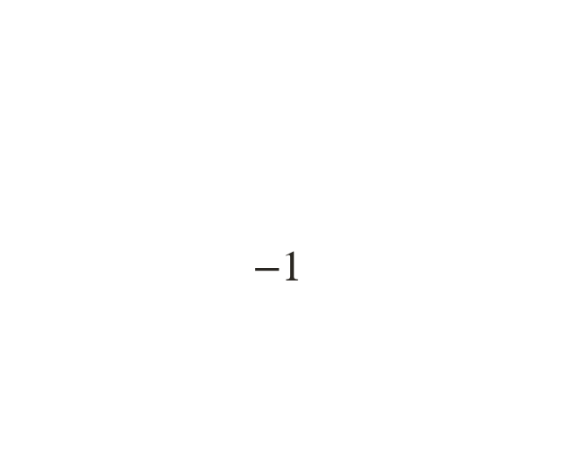
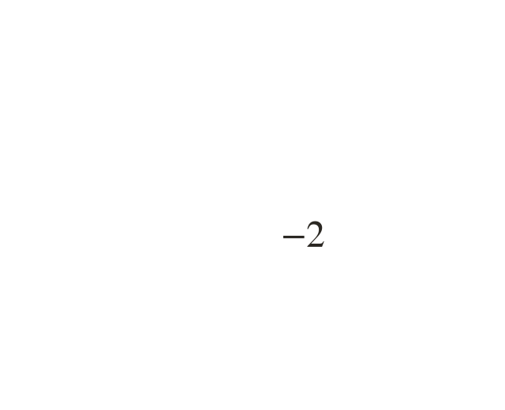
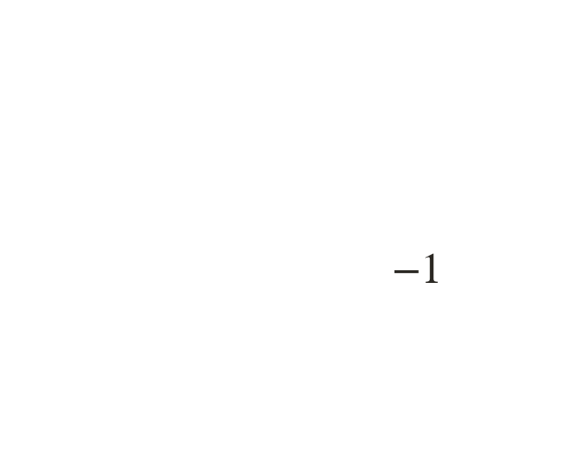
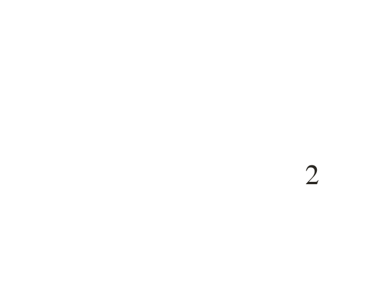
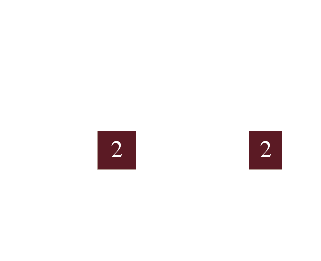

A table of values first
Substitute each to find A negative squares to a positive. So and give the same
A quadratic such as gives one for each found by substituting. Squaring a negative gives a positive, so and give the same